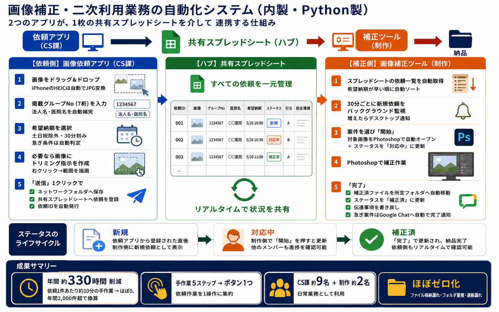

TOP 01 — 削減効果 最大
画像補正依頼アプリ
（Python GUI）
Desktop Application / COM Integration
年間 360時間
1件10分短縮 × 年間2,000件超
顧客対応チーム（9名）・制作チーム（2名）が日常業務として利用。
改善前
- サムネイルを目視で確認
- ファイル名を手動変更
- フォルダを手動で移動
- 依頼フォームを手動入力
- チャットで担当者に連絡
改善後
- HEIC→JPG 自動変換
- ファイル名 自動リネーム
- フォルダ 自動移動
- スプレッドシート 自動記録
- Google Chat 自動通知
- Adobe Photoshop 自動起動（COM連携）
技術・実装の詳細を見る
課題の背景
CS担当9名が毎日こなす写真補正依頼が、サムネイル目視・ファイルリネーム・フォルダ移動・フォーム入力・チャット連絡という5工程で構成されていた。1件10分 × 年間2,000件超 ＝ 年間330時間以上。格納漏れ・連絡漏れも常態化。
技術選定の理由
- 社内PC（Windows）で動く実行ファイルが必要 → Python + PyInstaller で .exe 化
- GUI必須（非エンジニアが使う）→ PySide6 でドラッグ＆ドロップUI
- 既存の Photoshop を自動制御 → Windows COM連携（win32com）
- 進捗共有は既存のスプレッドシートを活用 → Sheets API で同期
実装の工夫
- iPhone撮影のHEIC画像をJPGへ自動変換（pillow-heif）
- 案件グループNoから法人名・医院名を自動補完
- 右クリックでトリミング範囲を描画指示できるUI
- 30分バックグラウンド監視 → Photoshop自動起動・ファイル展開
- 補正完了後、所定フォルダへの自動移動 + Chat通知まで一気通貫
開発規模 / 運用状況
設計〜実装〜配布まで単独担当。CS9名 + 制作2名の計11名が日常業務として利用中（2024年〜）。ヒューマンエラー発生率 ほぼ0。
